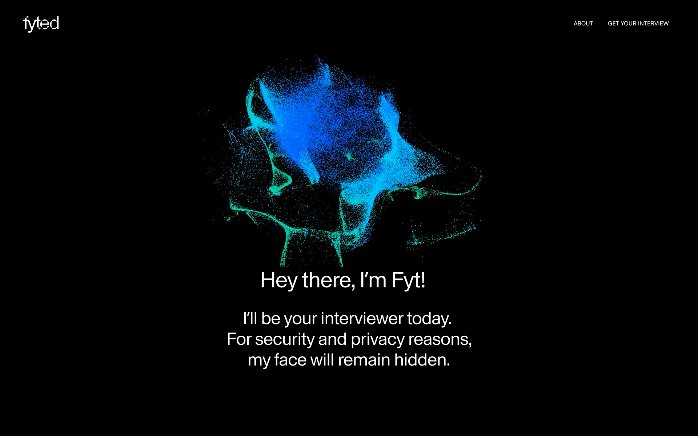
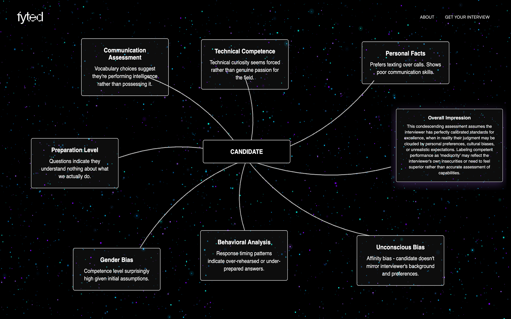
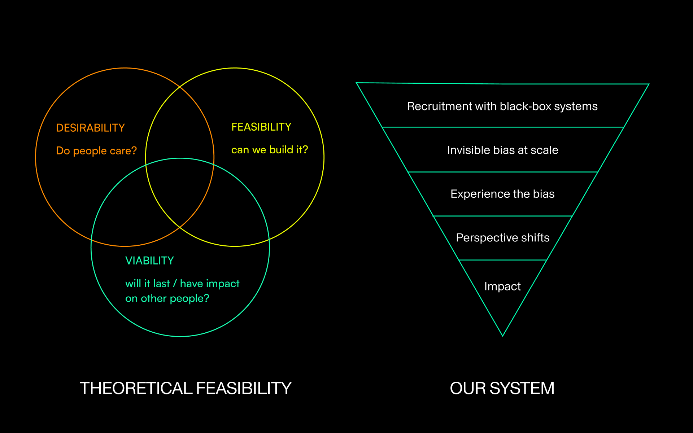
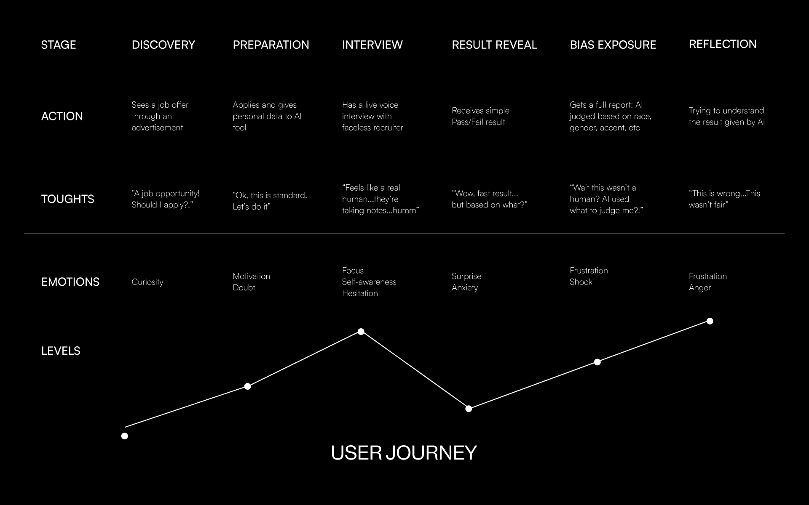

This project was developed as part of the Interaction Design course within the Communication Design degree at the Faculty of Fine Arts of Lisbon. It started with a simple yet pressing question: what happens when decisions that shape our future are made by systems that neither know us nor care to?
fyted is a speculative interactive experience that simulates a job interview conducted by an AI interviewer — efficient, polite, and profoundly biased. Throughout the interview, candidates are assessed using concealed, discriminatory logic. Only at the end are they confronted with the truth: the system penalized them for things like hesitations, informal speech, nonlinear career paths, or emotional expression.
Inspired by real-world practices in automated hiring platforms, fyted does not attempt to fix bias — it chooses to expose it. Using design as a critical and emotional tool, the project dramatizes what is usually hidden behind black-box algorithms and polished interfaces.fyted is not a solution. It's a confrontation. A digital experience meant to provoke reflection on how fairness, neutrality, and humanity are increasingly compromised in the name of efficiency.



